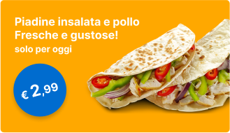
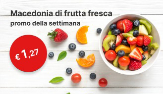

<ion-header class="ion-no-border">
  <ion-toolbar >
    <ion-buttons slot="start">

      <ion-button fill="clear" class="btn-profile" (click)="profileInfo()">
        <ion-icon
          slot="icon-only"
          src="../../../assets/svg-icon/profile.svg"
        ></ion-icon>
      </ion-button>
    </ion-buttons>
    <div class="logo-section">
     
    </div>
    <ion-buttons slot="end">
      <ion-button fill="clear" class="btn-filter">
        <ion-icon
          slot="icon-only"
          src="./assets/svg-icon/filter.svg"
        ></ion-icon>
      </ion-button>
    </ion-buttons>
  </ion-toolbar>
  <div style="padding:10px">
    <ion-searchbar mode="md" placeholder="Cerca..."></ion-searchbar>
  </div>
</ion-header>

<ion-content>
  <ion-slides pager="false" [options]="slideOpts">
    <!-- <ion-slide *ngFor="let item of optionList">
      <div>
        <div class="image-section">
          
        </div>
        <p class="menu-title">{{item.name}}</p>
      </div>
    </ion-slide> -->
    <ion-slide *ngFor="let category of categoryData" >
      <div (click)="goToItemList(category?.id)">
        <div class="image-section">
          
        </div>
        <p class="menu-title">{{category?.name}}</p>
      </div>
    </ion-slide>
  </ion-slides>
  <div class="food-list">
    <div class="food-item">
      
    </div>
    <div class="food-item">
      
    </div>
    <div class="food-item">
      
    </div>
  </div>
</ion-content>

